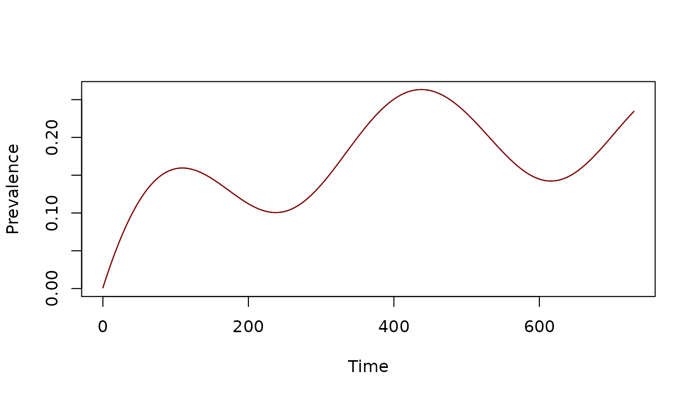
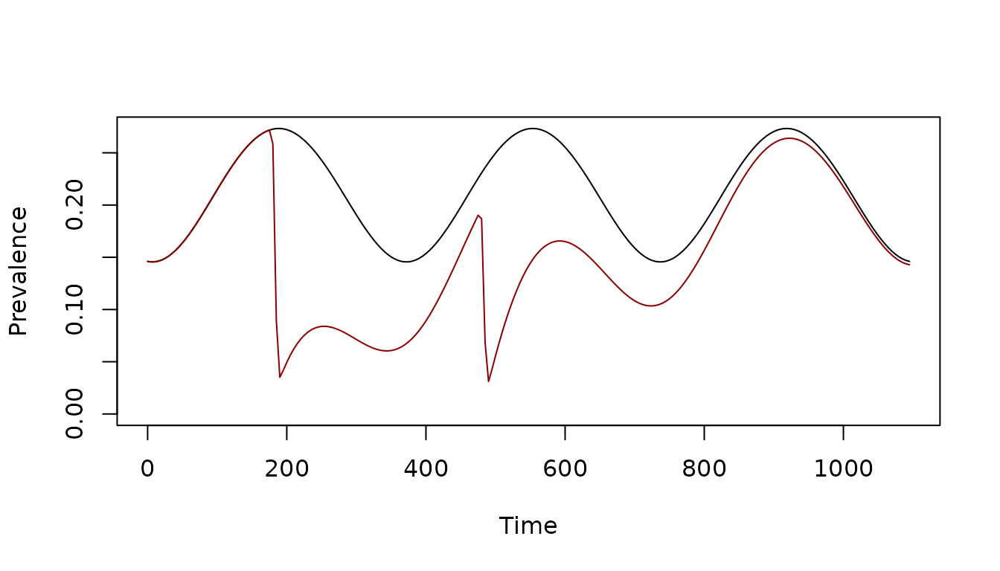
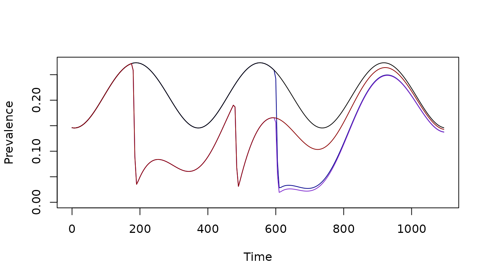

ramp.control has utilities to set up
and simulate mass treatment, including:
- mass drug administration (MDA)
- mass screen and treat (MSAT)
In the following, we demonstrate how, and then we discuss the implementation.
Basic Setup
The first step is basic setup. Before setting up MDA, it’s a good
idea to check that module is capable of handling mass treatment. To see
if a module supports it, look at the skill set. For example, we can
check whether the SIS supports MDA or MSAT.
skill_set_XH("SIS")$mda## [1] TRUEThe SIS module supports MDA.
The next step is basic setup:
base_model <- xds_setup_eir(Xname = "SIS",
eir=1/365,
season_par = makepar_F_sin(phase=120))Next we solve it.
base_model <- burnin(base_model)
base_model <- xds_solve(base_model, 1095,5)
xds_plot_PR(base_model)
Mass Treatment Events
Adding mass treatment is an advanced setup option. The
function call is setup_mass_treat_events.
To use it, we need to pass:
start– the julian date(s)span– the length of the eventfrac_tot– the fraction that will be treated (formda) or tested (formsat)-
test– whether testing is donetest=TRUEconfigures MSATtest=FALSEconfigures MDA
This sets up two rounds of MDA starting on days 180 and 480. Each round lasts 10 days, and treats 90% of the population.
start = c(180, 480)
span = c(10,10)
frac_tot = c(0.9, 0.9)
test = c(FALSE, FALSE)
mda_model <- setup_mass_treat_events(base_model, start, span, frac_tot, test)Now we solve the base_model with MDA and compare it to the baseline:
mda_model <- xds_solve(mda_model, 1095,5)
xds_plot_PR(base_model)
xds_plot_PR(mda_model, add=T, clrs = "darkred")
Add Events
To add another round of mass treatment, use
add_mass_treat_events. This adds an extra
round on day 600 that is like the others 2 rounds.
tt <- seq(0, 1095, by = 1)
mda_model_1 <- add_mass_treat_events(mda_model, 600, 10, .9, FALSE)
mda_model_1 <- xds_solve(mda_model_1, 1095,5)
show_mda(tt, mda_model_1)If no mass treatment events have been set up, the function calls
setup_mass_treat_events. This adds a mass treatment event
to the base_model
mda_model_2 <- add_mass_treat_events(base_model, 600, 10, .9, FALSE)
mda_model_2 <- xds_solve(mda_model_2, 1095,5)
show_mda(tt, mda_model_2)This plot compares all four models:
xds_plot_PR(mda_model_2, clrs="darkblue")
xds_plot_PR(mda_model_1, add=T, clrs = "purple3")
xds_plot_PR(base_model, add=T)
xds_plot_PR(mda_model, add=T, clrs = "darkred")
Notes
Mass Treatment Ports
To understand how the mass treatment ports are set up, we can look
inside the SIS module. The relevant lines in
dXHdt.SIS are these:
r_t <- r + mda(t) + d_rdt*msat(t)
dI <- foi*(H-I) - r_t*I + D_matrix %*% I In this case, both mda and msat work like
the parameter \(r,\) so inside the
code, a term is computed: r_t = r+mda(t)+d_rdt*msat(t),
where d_rdt is a parameter that describes the probability
of testing positive by RDT. Perhaps most importantly, mass treatment
functions return a per-capita rate.
This model explained in the documentation for the function:
help(dXHdt.SIS)During setup, The functions mda and msat
are assigned to a function that returns \(0.\) Advanced setup replaces
mda or msat with a new function.
Mass Treatment Functions
Treatment during the span of an event occurs at a fixed rate. The
shape of the treatment curve is a variant of a sharkfin
function:
The total area under the curve is calibrated to reach the right
fraction treated (for mda) or tested (for
msat): in this case, 90%. We can check this:
mda <- mda_model_1$mass_treat_obj$mda_obj$F_treat
t_frac = 1-exp(-integrate(mda, 595, 615)$val)
approx_equal(.9, t_frac, tol = 1e-6) ## [1] TRUE